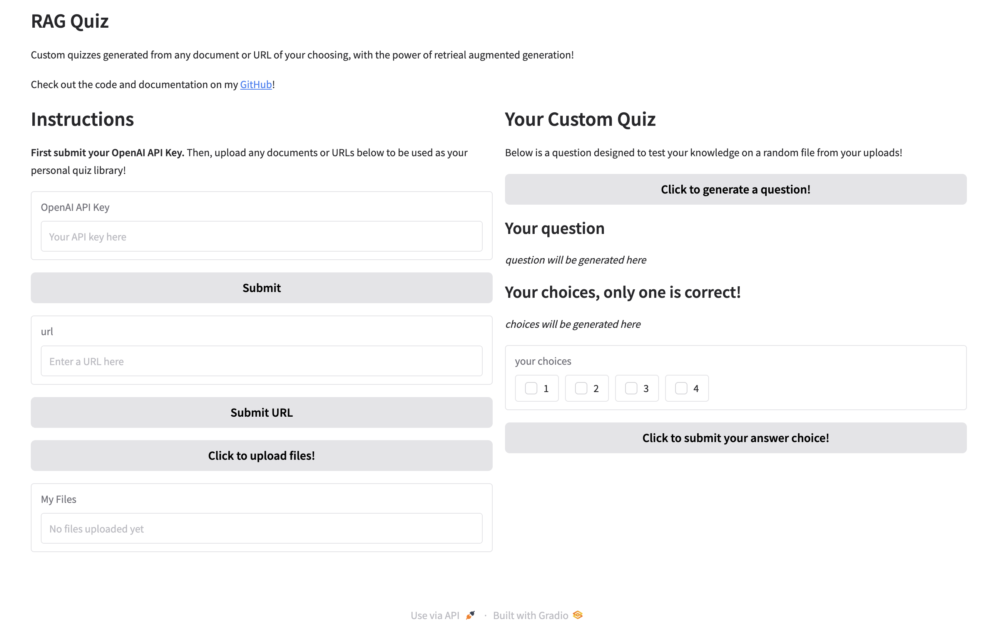

Personal RAG Quiz System
Using retrieval augmented generation to help you learn what you want to learn!

AI generated using DALL-E
Introduction
You've most likely used LLM platforms like ChatGPT or Claude to answer your burning questions about various topics, but how do you know where the model is getting its answers from? How can you be sure the sources are reliable, or relevant to your specific situation?
Retrieval augmented generation (RAG) is the answer! RAG essentially allows the model to use documents or resources you provide directly as a source to answer your questions! Want to understand the main ideas behind a long paper you're reading? Just upload the pdf and have the AI read through it for you! Want to find the specific instruction you're looking for in a dense text manual for a complicated tool? RAG can pinpoint it for you and even tell you the exact page it's on!
What is this tool?
As a simple demonstration of just how capable RAG is, and how simple it can be to apply, I created a RAG-powered custom quiz app!
This gradio demo is powered by OpenAI's gpt-4o model behind the scenes, and allows you to upload any number of documents you wish. It uses the OpenAI API assistants feature with file search capability (Official API Docs). On the right hand side, when you click generate, the system will generate a quiz question to help test your knowledge about a random document selected from your custom library!
In the URL section, I have also implemented the capability to perform RAG on any website with text content! Simply paste in the URL of a website, and the system will use web scraping with the Selenium Python library to get any relevant text from the page to use for retrieval!
Finally, the generated quiz question is displayed in the UI along with interactive elements for the user to choose their answer, as well as submit for "grading". In the backend, the model is also asked to provide the correct choice, so this information is used to provide feedback and help the user learn!
Structured Outputs
To ensure consistent response formats from gpt-4o, I employed OpenAI's Structured Outputs feature. This ensures that the model adheres to a user-specified JSON schema, and is perfect for applications such as this in which I rely on the model responses to populate my UI!
By definining classes in Python that inherit the Pydantic BaseModel class, we can customize the response format in our model completion call! For example, for my RAG quiz I defined the following schema:
class QuizSchema(BaseModel):
question: str
choice1: str
choice2: str
choice3: str
choice4: str
correct_choice: int
Limitations...
While the structured outputs feature works very well in guaranteeing an expected format, I faced some unexpected limitations in implementing them in my workflow.
For some reason, it seems that structured outputs are incompatible with various OpenAI Assistants features. Assistants is essentially OpenAI's "agentic" AI solution, giving models access to a variety of tools as well as persistent threads to manage multi-turn conversations. As mentioned before, for this application I used the file search tool to give gpt-4o access to a vector store of user-provided data. However, it appears that structured outputs is incompatible with file search (and other Assistants tools), an experience shared by others as seen in the following OpenAI community discussion.
My (temporary) workaround!
In order to mitigate this issue, I first make a basic call to gpt-4o without using a custom schema for the format, asking it with some in-context examples to provide a response in a JSOn format using the file search tool. Then, I pipe that response back into another API call, this time with structured outputs enabled, to essentially parse the first answer into my expected format. This allows me to get the same effect, albeit with twice the amount of API calls (and dollars spent...).
For reference, here are the prompts I used to first get a quiz format response from the model, as well as the second API call to get the structured output:
Prompts for getting "raw" output
json_prompt = """
Please provide your question and correct answer using the following JSON format:
{
"question": "question description"
"choice1": "answer choice description"
"choice2": "answer choice description"
"choice3": "answer choice description"
"choice4": "answer choice description"
"correct choice": "<Single Number>"
}
"""
final_prompt = "Give me one multiple choice question to test my knowledge of the following content.
Please provide your final answer in the following JSON format: " + json_prompt
Getting the final structured output
completion = self.client.beta.chat.completions.parse(
model="gpt-4o",
messages=messages,
response_format=QuizSchema,
)
The Demo
Below is a screenshot of the main UI of the app, showing the features described earlier. Feel free to go to my GitHub to download and test out the app for yourself! Note, you will have to provide your own OpenAI API key! NOTE: A public demo hosted on Huggingface Spaces is in the works as well!
